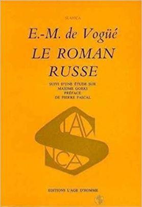
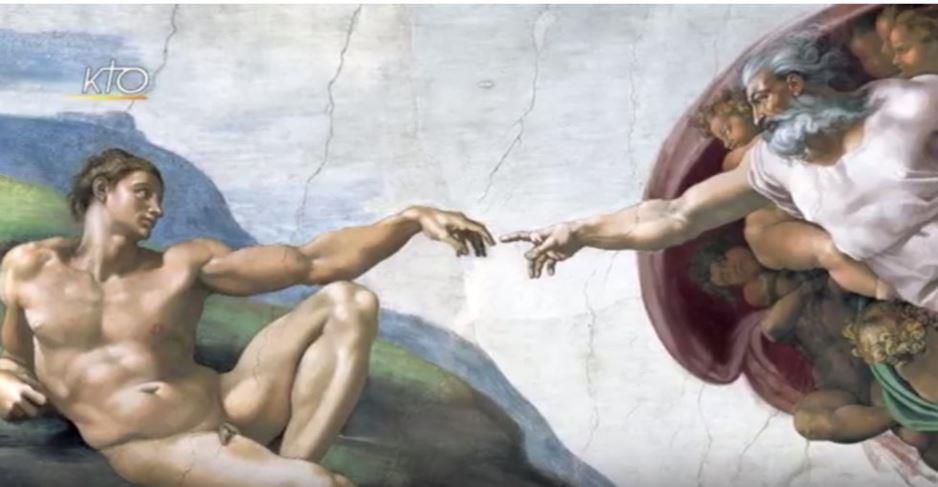

Le progrès de la science que les pays civilisés ont connu au xixe siècle a apporté les explications scientifiques à tout ce qui existe et qui vit, du fonctionnement de l’univers à celui de l’être humain, dotant la raison du pouvoir de tout contrôler. Cette attitude utilitariste de comprendre et d’expliquer toute chose contribue, selon Spengler, à rendre l’homme vide de son âme, phénomène où le philosophe voit le signe de l’épuisement intérieur de l’homme qui mène à la mort de la civilisation1.
Dans son Déclin de l’Occident Spengler affirme ainsi que malgré les rumeurs sur la dévaluation de toutes les valeurs, malgré le multiple choix de convictions et de confessions, les hommes, quoi qu’ils choisissent comme philosophie de la vie, font, désirent, ressentent tous exactement la même chose. Selon Spengler, la différence entre toutes ces convictions n’est qu’une différence de mots, le fond restant le même. Aucun de ces mouvements, estime le philosophe, n’a jamais changé l’essence de l’homme2. L’Homme du xxie siècle éprouve le même besoin de vérité et d’amour que l’Homme des époques précédentes3.
Une telle vision de l’Homme et de sa nature est partagée entre autres par le philosophe contemporain Gilles Lipovetsky qui accentue la persistance dans la société du « besoin […] de régulation éthique et déontologique, que ce soit au niveau social, économique ou encore médiatique4 ainsi que du besoin des idéaux éthiques5 sans lesquelles la société ne peut pas exister6 Lipovetsky affirme ainsi qu’à notre xxie siècle nous sommes plus que jamais à la recherche du sens de la vie :
Dans l’univers incertain, chaotique, atomisé de l’hypermodernité montent ainsi des besoins d’unité et de sens, de sécurité, d’identité communautaire : c’est la nouvelle chance des religions7.
Eugène-Melchior Vogüé, lui aussi, croit fortement que cette maladie aiguë qu’est le détachement de l’éternité sera combattue par « les cœurs des hommes qui ne changent jamais et qui demeurent toujours avec le même besoin de sympathie et d’espérance8 ». Dans son Roman russe vous trouverez les lignes suivantes :
[…] mieux armé et plus instruit, sans doute, mais qu’importe ? La nature semble avoir calculé une balance rigoureuse, dont elle rétablit sans cesse l’équilibre, entre nos conquêtes et nos besoins, ceux-ci s’accroissant avec les moyens de les satisfaire.
Dans ce grand désenchantement, les vieux instincts se ranimèrent ; l’homme chercha au-dessus de lui un pouvoir surhumain à implorer […]9.
Pour montrer qu’il n’est pas naturel pour l’Homme d’être esclave de la raison qui le fait souffrir Dostoïevski proclame lui aussi la victoire de l’irrationnel :
On entend déjà les sanglots de souffrance morale de toute l’humanité ; le mal gagne tous les peuples d’Europe ; ils s’agitent, les malheureux, ne sachant pas comment se soulager ; tous les remèdes, tous les secours que leur raison invente leur sont insupportables et ne procurent aucun bien. Ces gémissements vont encore augmenter, jusqu’au jour où le cœur le plus dur se brisera de pitié, où une force de compassion inconnue jusqu’ici suscitera une force d’amour également inconnue. L’homme s’enflammera pour l’humanité d’un amour plus ardent que le monde n’en vit jamais10.
On peut trouver la même réflexion sur la présence inévitable du mystère dans une société civilisée dans La Rumeur de Dieu. Signes actuels du surnaturel de Peter Berger :
Quelles qu’en soient les raisons, bien des « hommes modernes » se sentent toujours attirés par le grandiose, le mystère, par toutes ces réalités qu’un rationalisme sécularisé rejette violemment11.
En développant cette pensée, Berger parle de l’extase et de la métaphysique en tant que dimensions essentielles de l’existence humaine :
Dans l’ordre pratique comme dans la réflexion théorique, ce qui enrichit le plus la vie humaine c’est l’aptitude à l’extase – je n’entends pas par là les expériences particulières des mystiques, mais toute expérience d’évasion de la banalité quotidienne, toute ouverture au mystère qui nous environne de toutes parts12.
Berger voit ce sens dans l’espoir en un meilleur avenir qui est le besoin incurable de l’homme lui permettant de surmonter toutes les difficultés et toutes les souffrances13.
L’expérience personnelle de Tolstoï témoigne également de l’impossibilité de la science à expliquer le sens de la vie :
La science humaine ne m’a rien expliqué : à mon éternelle question, la seule qui m’importe : « Pourquoi est-ce que je vis ? » la science répondait en m’apprenant d’autres choses, dont je n’ai cure. Avec la science, il n’y avait qu’à se joindre au chœur séculaire des sages, Salomon, Socrate, Çakya-Mouni, Schopenhauer, et à répéter après eux : La vie est un mal absurde14.
La science n’a donc pas « sauvé » l’humanité15. Elle n’a pas débarrassé cette dernière des doutes ni de l’irrationnel. Aucun avancement technologique ni democratico-libérateur ne pourront jamais changer la nature humaine, en tout cas pas sa psyché la plus profonde. Réconcilions-nous alors avec l’inévitable et l’évident – le mystère, et le monde ira mieux.
A.G.
NOTES
1 Osval’d Špengler, op. cit., p. 538.
2 Osval’d Špengler, op. cit., p. 530.
3 Gilles Lipovetsky, Sébastien Charles, op. cit., p. 48-49.
4 Gilles Lipovetsky, Sébastien Charles, op. cit., p. 52-53.
5 Ibid., p. 54.
6 Ibid., p. 171.
7 Gilles Lipovetsky, Sébastien Charles, op. cit., p. 137.
8 Eugène-Melchior de Vogüé, Le Roman russe, op. cit., p. 378.
9 Eugène-Melchior de Vogüé dans Le Roman russe, op. cit., p. 88.
10 Cité par Eugène-Melchior de Vogüé dans Le Roman russe, op. cit., p. 226.
11 Peter Berger, op. cit., p. 45.
12 Ibid., p. 119-120.
13 Peter Berger, op. cit., p. 99-100.
14 Eugène-Melchior de Vogüé, Le Roman russe, op. cit., p. 407.
15 Efim Etkind, « L’actualité du Roman Russe », in Eugène-Melchior de Vogüé, Le héraut du roman russe, textes réunis et présentés par Michel Cadot, Paris, Institut des études slaves, 1989, p. 106.
Partager cette page